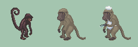

Baboon anatomy rebuild
The animal comes first. Compare the bare baboon with the supplied photographs, then judge the chef pose. Review the revised shading, four angles and animations.
 Face reference
Face reference
 Standing reference
Standing reference
Same pixel scale
Left to right: Spider Worker · unclothed baboon · chef. Each source pixel is enlarged equally to 4×.
View at native scale

Three chefs at each grill
Static asset review. Files, reference notes and rebuild command · Placement metadata